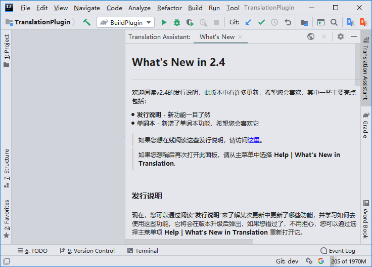
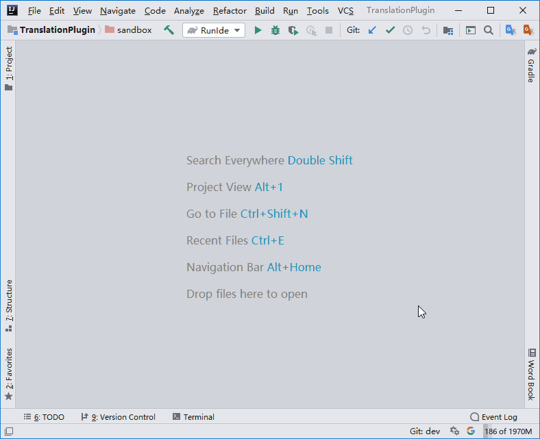
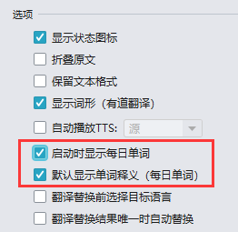

欢迎阅读v2.4的发行说明，此版本中有许多更新，希望您会喜欢，其中一些主要亮点包括：
- 发行说明 - 新功能一目了然
- 单词本 - 新增了单词本功能，希望您会喜欢它
如果您想在线阅读这些发行说明，请访问这里。
发行说明
现在，您可以通过阅读“发行说明”来了解某次更新中更新了哪些功能，并学习如何去使用这些功能。它将会在版本升级后弹出，如果您错过了，不用担心，您可以通过选择主菜单项 Help | What's New in Translation 重新打开它。
单词本
某些IED（如：WebStorm）可能需要下载支持库才能使用“单词本”功能，这时候只需在“单词本”面板中点击“下载”并等待下载完成后即可正常使用。
每日单词
“每日单词”会将单词本中所有单词打乱顺序后逐个显示，可以通过 “Word of the Day” 动作（无默认快捷键）来打开它。

也可以通过勾选设置页的 “启动时显示每日单词” 选项，使之在IDE启动后弹出显示。另外，“每日单词”默认会隐藏单词释义，如需取消隐藏，勾选设置页的 “默认显示单词释义” 选项即可。
